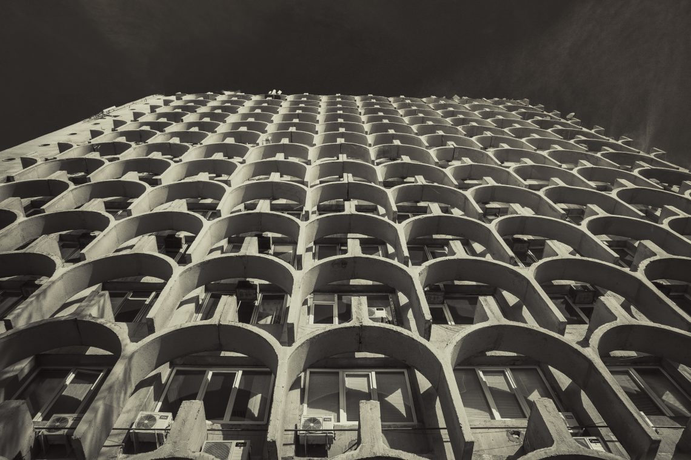
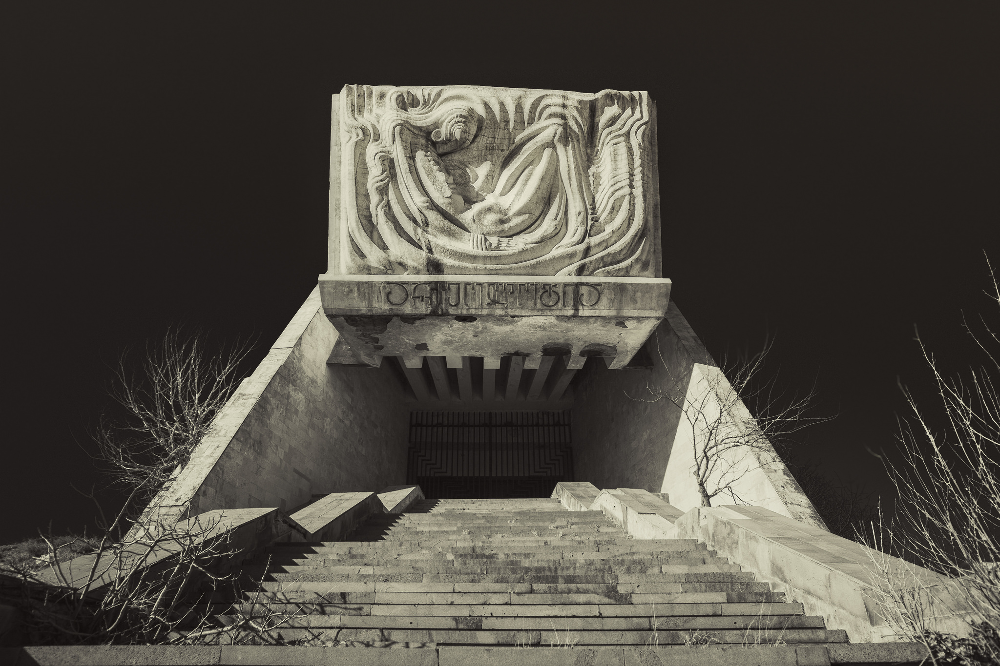
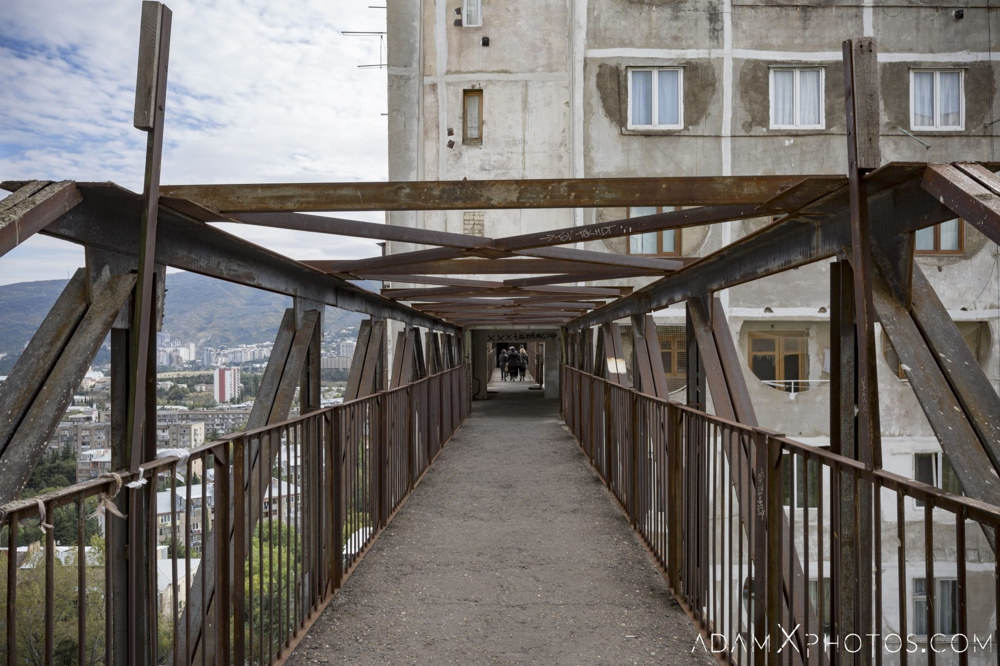
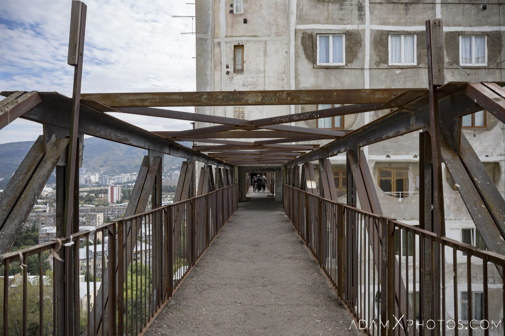
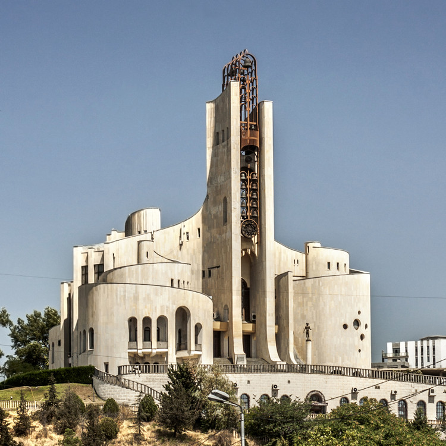
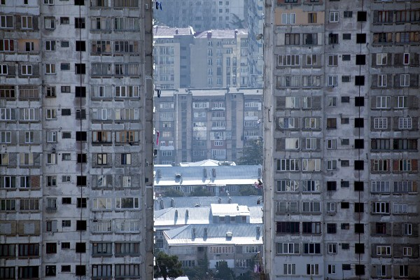
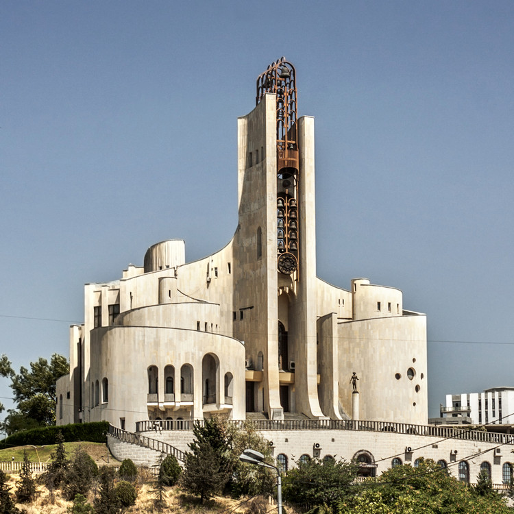
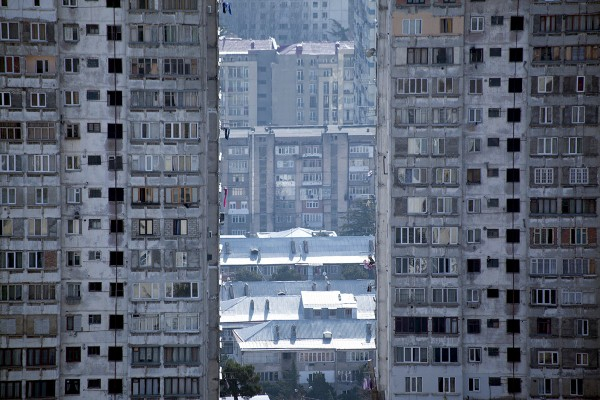

Tbilisi Soviet-era Building Listed Among the Best Brutalist Architecture Examples
 masterpiece by Otar Kalandarishvili and Guizo Potskhishvili
 

Located in the Saburtalo District of Tbilisi, this trio of brutalist apartment blocks were designed by the architects Otar Kalandarishvili and Guizo Potskhishvili and constructed between 1974-1976. The apartments are still occupied to this day, with its lifts operated by coin, and the ‘sky bridge’ walkways falling into disrepair along with the rest of the buildings…
  
to get more information
 
to get more information